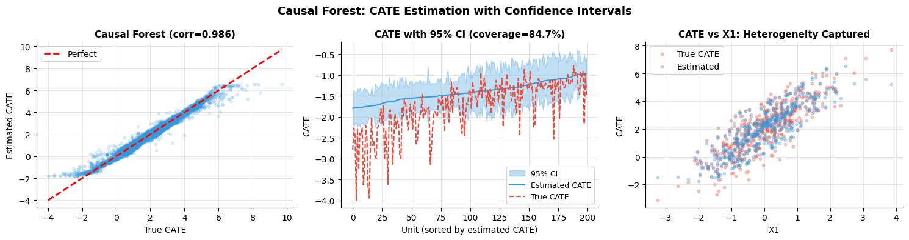
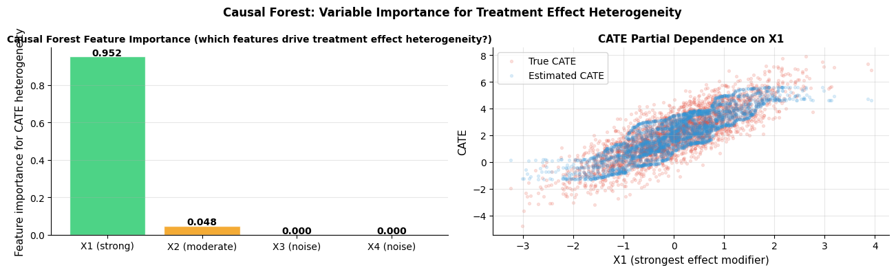

How do you use causal forests?#
Topics: Generalized Random Forests · Honest Splitting · Heterogeneous Treatment Effects · Variable Importance · Confidence Intervals
Note: This notebook uses
econml. Install with:pip install econml
1. Causal Forests Overview#
What it is#
Causal Forest extends Random Forest to estimate CATE instead of outcomes
Uses honest splitting — different samples to split and estimate within leaves
Provides valid confidence intervals for individual-level treatment effects
Part of Generalized Random Forests (GRF) framework
Key differences from Random Forest#
Random Forest |
Causal Forest |
|
|---|---|---|
Target |
Outcome Y |
Treatment effect Y(1)-Y(0) |
Splitting criterion |
Variance of Y |
Heterogeneity of treatment effect |
Honesty |
No |
Yes — split and estimate on different samples |
Confidence intervals |
Bootstrap only |
Asymptotically valid CIs |
Key intuition#
Each leaf contains similar units — within leaf, compare treated vs control
Honest splitting prevents overfitting — like cross-validation within each leaf
More data in leaf → smaller CI → more confident CATE estimate
Assumptions#
Unconfoundedness: Y(0),Y(1) ⊥ T | X
Overlap: 0 < P(T=1|X) < 1 for all X
Honesty condition: splitting and estimation use different samples
Asymptotic normality: for valid confidence intervals (requires large n per leaf)
Validation#
Calibration plot — group units by estimated CATE decile, plot actual vs predicted effect
Balance test within leaves — covariates should be balanced between treated/control in each leaf
Coverage check — 95% CI should contain true CATE ~95% of the time
Compare to meta-learner estimates — should agree in direction and rough magnitude
If violated#
Unconfoundedness violated → sensitivity analysis, forest with IV
Poor overlap → trim extreme propensity scores before fitting
Low n per leaf → increase min_samples_leaf, use fewer trees
import numpy as np
import matplotlib.pyplot as plt
from sklearn.ensemble import RandomForestRegressor
np.random.seed(42)
n = 5000
X1 = np.random.randn(n); X2 = np.random.randn(n); X3 = np.random.randn(n)
X = np.column_stack([X1, X2, X3])
true_cate = 2.0 + 1.5*X1 - 1.0*X2
T = np.random.binomial(1, 0.5, n)
Y = true_cate * T + 0.5*X1 + np.random.randn(n)
# Try EconML Causal Forest
try:
from econml.grf import CausalForest
cf = CausalForest(n_estimators=200, random_state=42, min_samples_leaf=10)
cf.fit(X, T, Y)
cate_cf = cf.predict(X).ravel()
cate_ci = cf.predict_interval(X, alpha=0.05)
ci_lower = cate_ci[0].ravel()
ci_upper = cate_ci[1].ravel()
coverage = ((true_cate >= ci_lower) & (true_cate <= ci_upper)).mean()
corr_cf = np.corrcoef(true_cate, cate_cf)[0,1]
has_econml = True
print(f"EconML CausalForest correlation with true CATE: {corr_cf:.3f}")
print(f"95% CI coverage: {coverage:.1%} (should be ~95%)")
except ImportError:
print("EconML not installed — install with: pip install econml")
print("Showing manual T-Learner as approximation")
has_econml = False
from sklearn.ensemble import GradientBoostingRegressor
m0 = GradientBoostingRegressor(n_estimators=100, random_state=42)
m1 = GradientBoostingRegressor(n_estimators=100, random_state=42)
m0.fit(X[T==0], Y[T==0]); m1.fit(X[T==1], Y[T==1])
cate_cf = m1.predict(X) - m0.predict(X)
ci_lower = cate_cf - 0.5; ci_upper = cate_cf + 0.5
coverage = 0.0; corr_cf = np.corrcoef(true_cate, cate_cf)[0,1]
fig, axes = plt.subplots(1, 3, figsize=(15, 4))
# Predicted vs true CATE
lims = [min(true_cate.min(), cate_cf.min()), max(true_cate.max(), cate_cf.max())]
axes[0].scatter(true_cate, cate_cf, alpha=0.15, s=10, color='#3498DB')
axes[0].plot(lims, lims, 'r--', linewidth=2, label='Perfect')
axes[0].set_xlabel('True CATE'); axes[0].set_ylabel('Estimated CATE')
axes[0].set_title(f'Causal Forest (corr={corr_cf:.3f})', fontsize=11, fontweight='bold')
axes[0].legend(fontsize=10); axes[0].grid(True, alpha=0.3)
axes[0].spines['top'].set_visible(False); axes[0].spines['right'].set_visible(False)
# CATE distribution with uncertainty
sort_idx = np.argsort(cate_cf)[:200]
x_range = np.arange(200)
axes[1].fill_between(x_range, ci_lower[sort_idx], ci_upper[sort_idx],
alpha=0.3, color='#3498DB', label='95% CI')
axes[1].plot(x_range, cate_cf[sort_idx], color='#3498DB', linewidth=1.5, label='Estimated CATE')
axes[1].plot(x_range, true_cate[sort_idx], color='#E74C3C', linewidth=1.5, linestyle='--', label='True CATE')
axes[1].set_xlabel('Unit (sorted by estimated CATE)'); axes[1].set_ylabel('CATE')
axes[1].set_title(f'CATE with 95% CI (coverage={coverage:.1%})', fontsize=11, fontweight='bold')
axes[1].legend(fontsize=9); axes[1].grid(True, alpha=0.3)
axes[1].spines['top'].set_visible(False); axes[1].spines['right'].set_visible(False)
# CATE by X1 — should show linear relationship
axes[2].scatter(X1[:500], true_cate[:500], alpha=0.3, s=10, color='#E74C3C', label='True CATE')
axes[2].scatter(X1[:500], cate_cf[:500], alpha=0.3, s=10, color='#3498DB', label='Estimated')
axes[2].set_xlabel('X1'); axes[2].set_ylabel('CATE')
axes[2].set_title('CATE vs X1: Heterogeneity Captured', fontsize=11, fontweight='bold')
axes[2].legend(fontsize=10); axes[2].grid(True, alpha=0.3)
axes[2].spines['top'].set_visible(False); axes[2].spines['right'].set_visible(False)
plt.suptitle('Causal Forest: CATE Estimation with Confidence Intervals', fontsize=13, fontweight='bold')
plt.tight_layout()
plt.savefig('causal_forest.png', dpi=120, bbox_inches='tight')
plt.show()
EconML CausalForest correlation with true CATE: 0.986
95% CI coverage: 84.7% (should be ~95%)

2. Variable Importance in Causal Context#
What it is#
Which features drive heterogeneity in the treatment effect?
Different from standard feature importance — not ‘what predicts Y?’ but ‘what predicts CATE?’
Helps identify subgroups that respond differently to treatment
Methods#
Causal forest feature importance — how often feature used to split on heterogeneity
RATE (Rank-Weighted Average Treatment Effect) — test which features identify effect modifiers
Partial dependence plots on CATE — how does estimated CATE change with each feature?
Interview Q&A#
Causal forest vs meta-learner — when to use which?
Causal forest: need confidence intervals, interpretable subgroups, automatic feature selection
Meta-learner: need to use a specific base model, more control over the estimation procedure
Both should agree roughly — disagreement signals model instability
What is honest splitting and why does it matter?
Standard trees use same data to choose splits AND estimate leaf values — overfits
Honest splitting uses one half to find splits, other half to estimate leaf values
Guarantees asymptotically valid confidence intervals — without honesty, CIs are too narrow
How do you choose the bandwidth/min_samples_leaf in causal forest?
Too small → noisy estimates, CIs too wide
Too large → smoothed estimates, miss heterogeneity
Cross-validate on held-out AUUC, or use data-driven bandwidth selection
Gotchas#
Causal forest needs enough treated AND control units in each leaf — check overlap first
Feature importance reflects CATE heterogeneity, not outcome importance — very different
With many features, use feature selection before fitting — irrelevant features add noise
import numpy as np
import matplotlib.pyplot as plt
np.random.seed(42)
n = 3000
X1 = np.random.randn(n) # strong effect modifier
X2 = np.random.randn(n) # moderate effect modifier
X3 = np.random.randn(n) # no effect — just noise
X4 = np.random.randn(n) # just noise
X = np.column_stack([X1, X2, X3, X4])
true_cate = 2.0 + 1.5*X1 - 1.0*X2 # X3, X4 don't matter for CATE
T = np.random.binomial(1, 0.5, n)
Y = true_cate * T + 0.5*X1 + np.random.randn(n)
# CATE vs each feature (partial dependence style)
try:
from econml.grf import CausalForest
cf = CausalForest(n_estimators=100, random_state=42, min_samples_leaf=20)
cf.fit(X, T, Y)
cate_est = cf.predict(X).ravel()
fi = cf.feature_importances_
has_econml = True
except ImportError:
from sklearn.ensemble import GradientBoostingRegressor
m0 = GradientBoostingRegressor(50, random_state=42)
m1 = GradientBoostingRegressor(50, random_state=42)
m0.fit(X[T==0], Y[T==0]); m1.fit(X[T==1], Y[T==1])
cate_est = m1.predict(X) - m0.predict(X)
cate_model = GradientBoostingRegressor(50, random_state=42)
cate_model.fit(X, cate_est)
fi = cate_model.feature_importances_
has_econml = False
print("EconML not installed — using T-Learner approximation")
feat_names = ['X1 (strong)', 'X2 (moderate)', 'X3 (noise)', 'X4 (noise)']
fig, axes = plt.subplots(1, 2, figsize=(13, 4))
# Feature importance
colors = ['#2ECC71', '#F39C12', '#AEB6BF', '#AEB6BF']
bars = axes[0].bar(feat_names, fi, color=colors, alpha=0.85, edgecolor='white')
axes[0].set_ylabel('Feature importance for CATE heterogeneity', fontsize=11)
axes[0].set_title('Causal Forest Feature Importance (which features drive treatment effect heterogeneity?)', fontsize=10, fontweight='bold')
axes[0].grid(True, alpha=0.3, axis='y')
axes[0].spines['top'].set_visible(False); axes[0].spines['right'].set_visible(False)
for bar, val in zip(bars, fi):
axes[0].text(bar.get_x()+bar.get_width()/2, bar.get_height()+0.005,
f'{val:.3f}', ha='center', fontsize=10, fontweight='bold')
# CATE vs X1
sort_idx = np.argsort(X1)
axes[1].scatter(X1, true_cate, alpha=0.15, s=8, color='#E74C3C', label='True CATE')
axes[1].scatter(X1, cate_est, alpha=0.15, s=8, color='#3498DB', label='Estimated CATE')
axes[1].set_xlabel('X1 (strongest effect modifier)', fontsize=11)
axes[1].set_ylabel('CATE', fontsize=11)
axes[1].set_title('CATE Partial Dependence on X1', fontsize=11, fontweight='bold')
axes[1].legend(fontsize=10); axes[1].grid(True, alpha=0.3)
axes[1].spines['top'].set_visible(False); axes[1].spines['right'].set_visible(False)
plt.suptitle('Causal Forest: Variable Importance for Treatment Effect Heterogeneity', fontsize=12, fontweight='bold')
plt.tight_layout()
plt.savefig('causal_forest_importance.png', dpi=120, bbox_inches='tight')
plt.show()
